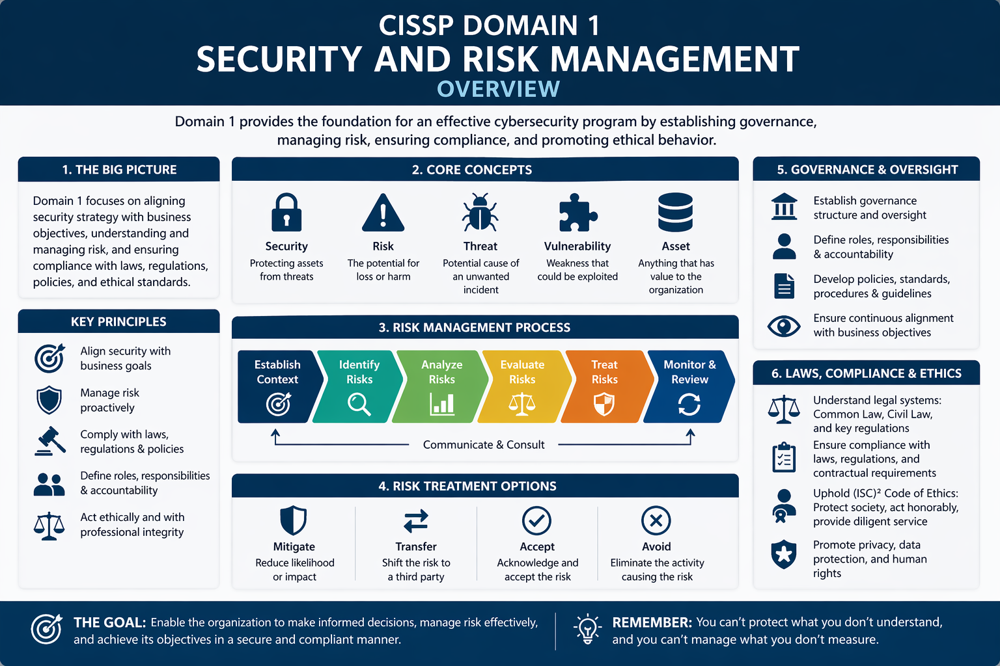

Domain introduction
Security and Risk Management is the foundation of the CISSP body of knowledge. It explains how organizations decide what must be protected, which risks are acceptable, and which controls are needed to reduce unacceptable risk. This domain connects technical cybersecurity work to business objectives, legal obligations, ethical responsibilities, and governance structures.
For ICT students, this domain is important because security decisions are rarely only technical. A firewall, encryption system, access policy, or backup strategy should always be connected to organizational risk, compliance requirements, and the value of the asset being protected.
Explain security objectives
Describe confidentiality, integrity, availability, and how these principles influence technical and organizational controls.
Reason about risk
Identify assets, threats, vulnerabilities, likelihood, and impact to choose suitable risk treatment options.
Connect security to governance
Relate policies, standards, compliance, privacy, business continuity, and ethics to everyday ICT decisions.
Figures and mental models
Figure 1 — CIA Triad
Figure 2 — Basic risk management cycle
Case examples for class discussion
Case 1 — Ransomware at a regional hospital
A hospital’s file servers become encrypted by ransomware. Patient care is disrupted because staff cannot access treatment records or scheduling systems.
- CIA impact: availability is immediately affected, but confidentiality may also be at risk if data was stolen.
- Risk treatment: backups, incident response, network segmentation, staff awareness, and vendor security reviews reduce future exposure.
- Discussion: What is the acceptable recovery time for critical healthcare systems?
Case 2 — Student data in a cloud service
A university wants to store student records in a cloud platform. The records include names, grades, contact details, and study progress information.
- Governance issue: the university remains accountable for privacy and data protection, even when a vendor processes the data.
- Controls: data classification, contractual requirements, encryption, audit rights, and access reviews should be considered.
- Discussion: Which risks can be transferred to the vendor, and which risks remain with the university?
Glossary — 50 core terms
The definitions below reuse the approved Domain 1 terminology and are written for undergraduate ICT students.
| # | Term | Definition |
|---|---|---|
| 1 | Confidentiality | Confidentiality means protecting information so that it is only accessible to authorized users, systems, or processes. It prevents sensitive data from being disclosed to people who are not permitted to see it. |
| 2 | Integrity | Integrity ensures that information remains accurate, complete, and trustworthy. Security mechanisms such as hashing, checksums, and access controls prevent unauthorized modification or corruption of data. |
| 3 | Availability | Availability ensures that systems, applications, and data are accessible when users need them. Redundancy, backups, fault tolerance, and disaster recovery mechanisms help maintain availability during failures or attacks. |
| 4 | CIA Triad | The CIA Triad is the foundational security model consisting of confidentiality, integrity, and availability. These three principles guide the design, evaluation, and management of information security controls. |
| 5 | Asset | An asset is anything valuable to an organization that requires protection. Assets may include data, software, hardware, services, intellectual property, reputation, and even employees. |
| 6 | Threat | A threat is any circumstance, event, or actor capable of causing harm to an information system. Threats may be natural, accidental, or intentional, such as hackers, malware, or human error. |
| 7 | Vulnerability | A vulnerability is a weakness in a system, application, process, or control that could be exploited by a threat. Vulnerabilities often arise from software bugs, misconfigurations, or poor security practices. |
| 8 | Risk | Risk represents the potential for loss or damage when a threat exploits a vulnerability. In cybersecurity, risk is often described as the combination of likelihood and potential impact. |
| 9 | Risk Assessment | Risk assessment is the systematic process of identifying assets, threats, and vulnerabilities, and evaluating the likelihood and impact of security incidents that could affect the organization. |
| 10 | Risk Analysis | Risk analysis evaluates identified risks by estimating their probability and potential impact. The results help organizations prioritize which security risks require immediate attention and mitigation. |
| 11 | Risk Management | Risk management is the ongoing process of identifying, analyzing, prioritizing, and responding to security risks. The goal is to reduce risk to an acceptable level for the organization. |
| 12 | Risk Mitigation | Risk mitigation involves implementing controls that reduce the likelihood or impact of a risk. Examples include security patches, firewalls, encryption, and security awareness training. |
| 13 | Risk Transfer | Risk transfer shifts the financial or operational impact of risk to another party. Organizations commonly transfer risk through insurance policies, outsourcing services, or contractual agreements with suppliers. |
| 14 | Risk Acceptance | Risk acceptance occurs when an organization decides to tolerate a risk without implementing additional controls. This decision is usually made when mitigation costs exceed the potential damage. |
| 15 | Risk Avoidance | Risk avoidance eliminates a risk entirely by discontinuing the activity that creates it. For example, an organization may stop offering a risky online service to avoid potential security exposure. |
| 16 | Risk Appetite | Risk appetite describes the amount of risk an organization is willing to accept in pursuit of its objectives. It is typically defined by senior management. |
| 17 | Risk Tolerance | Risk tolerance defines the acceptable variation around the organization’s risk appetite. It helps determine when risk levels exceed acceptable boundaries and require mitigation. |
| 18 | Risk Register | A risk register is a structured document used to track identified risks, their likelihood, impact, mitigation strategies, and responsible stakeholders within an organization. |
| 19 | Security Governance | Security governance refers to the leadership, policies, processes, and organizational structures that ensure cybersecurity activities align with business objectives and regulatory requirements. |
| 20 | Policy | A policy is a high-level management statement that defines the organization’s security objectives and rules. Policies guide decision-making and establish expectations for security behavior. |
| 21 | Standard | A standard specifies mandatory technical or procedural requirements that support policies. Standards ensure consistent implementation of security practices across systems and departments. |
| 22 | Procedure | A procedure describes the detailed step-by-step process for performing a specific task. Procedures translate policies and standards into operational instructions for employees. |
| 23 | Guideline | Guidelines are recommended practices that help employees implement policies and procedures. Unlike standards, guidelines are flexible and can be adapted depending on the situation. |
| 24 | Compliance | Compliance means adhering to laws, regulations, industry standards, and organizational policies related to information security and data protection. |
| 25 | Regulation | A regulation is a legally binding rule issued by a governmental authority. Organizations must comply with regulations such as GDPR or HIPAA to avoid penalties. |
| 26 | Due Care | Due care means taking reasonable steps to protect information systems and data. Organizations demonstrate due care by implementing security controls and enforcing policies. |
| 27 | Due Diligence | Due diligence refers to continuously monitoring, evaluating, and improving security practices. It ensures that security controls remain effective over time. |
| 28 | Security Awareness | Security awareness programs educate employees about cybersecurity risks and safe practices, such as recognizing phishing emails and protecting passwords. |
| 29 | Security Training | Security training provides employees with practical skills and knowledge needed to perform their roles securely, often including technical or role-specific cybersecurity instruction. |
| 30 | Ethics | Ethics refers to moral principles guiding professional behavior in cybersecurity. Security professionals are expected to protect society, respect privacy, and act responsibly. |
| 31 | Accountability | Accountability ensures individuals are responsible for their actions within information systems. Logging, auditing, and authentication mechanisms help enforce accountability. |
| 32 | Non-repudiation | Non-repudiation ensures that a person cannot deny performing an action, such as sending a message or approving a transaction. Digital signatures commonly support non-repudiation. |
| 33 | Security Culture | Security culture describes the shared attitudes and behaviors within an organization regarding cybersecurity responsibilities and safe digital practices. |
| 34 | Audit | An audit is a formal review of systems, processes, and controls to verify compliance with security policies, regulations, and standards. |
| 35 | Business Continuity | Business continuity ensures that critical business functions continue operating during and after disruptions such as cyberattacks, power failures, or natural disasters. |
| 36 | Business Impact Analysis | A business impact analysis identifies critical processes and evaluates the consequences of disruptions. It helps organizations prioritize recovery strategies. |
| 37 | Disaster Recovery | Disaster recovery focuses on restoring IT infrastructure, applications, and data after major disruptions. Recovery plans define procedures and recovery time objectives. |
| 38 | Incident Response | Incident response is the structured process for detecting, analyzing, containing, and recovering from security incidents such as cyberattacks or data breaches. |
| 39 | Third-Party Risk | Third-party risk arises when vendors, partners, or service providers introduce security weaknesses into an organization’s systems or data environment. |
| 40 | Vendor Risk Management | Vendor risk management evaluates and monitors suppliers to ensure they maintain appropriate security practices when handling organizational data or services. |
| 41 | Privacy | Privacy refers to individuals’ rights to control how their personal information is collected, processed, stored, and shared by organizations. |
| 42 | Personal Data | Personal data is any information that can identify an individual directly or indirectly, such as names, identification numbers, or online identifiers. |
| 43 | Data Protection | Data protection involves implementing technical and organizational measures to safeguard personal and sensitive information from unauthorized access or misuse. |
| 44 | Intellectual Property | Intellectual property includes creations such as software, inventions, designs, and written works that are legally protected to preserve ownership rights. |
| 45 | Copyright | Copyright protects original works of authorship such as books, music, and software from unauthorized reproduction or distribution. |
| 46 | Patent | A patent grants inventors exclusive rights to produce and sell an invention for a limited period in exchange for publicly disclosing the invention. |
| 47 | Trade Secret | A trade secret is confidential business information that provides a competitive advantage, such as algorithms, formulas, or manufacturing processes. |
| 48 | Security Strategy | A security strategy defines long-term goals, priorities, and investments that guide how an organization protects its information systems and data. |
| 49 | Security Program | A security program is the organized collection of policies, technologies, procedures, and people responsible for protecting an organization’s information assets. |
| 50 | Governance Framework | A governance framework defines the structures, roles, and processes used to manage cybersecurity activities and ensure accountability across the organization. |
Teaching reference basis: CISSP Domain 1 concepts, ISC2-style terminology, NIST risk-management vocabulary, ISO governance concepts, and common privacy/compliance language.
Review questions
- How do confidentiality, integrity, and availability conflict with each other in real ICT systems?
- What is the difference between a threat, a vulnerability, and a risk?
- When would an organization accept a risk instead of mitigating it?
- Why is third-party risk still the responsibility of the organization using the supplier?
- How do policies, standards, procedures, and guidelines differ in daily security management?